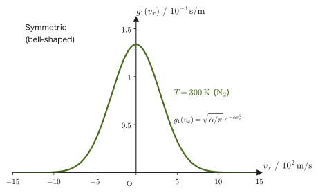
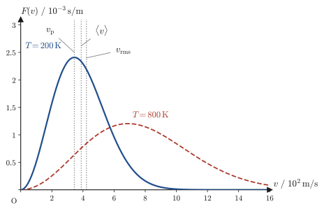

Chapter 34Gateway to Statistical Thermodynamics — Maxwell's Velocity Distribution
Up to this point, thermodynamics has been built using only quantities that can be measured when a gas is treated as a single “lump” (macroscopic quantities): the pressure $p$, the volume $V$, the temperature $T$, the internal energy $U$, the entropy $S$, and so on. That a gas is really a collection of an enormous number of molecules was touched on only briefly in Chapter 24, on the kinetic theory of gases. Physicists, however, have always wanted to know “what the microscopic molecules are actually doing behind the macroscopic laws.” In this final chapter we stand at the entrance to that question. We derive the probabilistic law describing how the velocities of the individual gas molecules are distributed—Maxwell's velocity distribution law—from two hypotheses, “the three components of the velocity are independent of one another” and “pressure arises from the collisions of molecules,” and we check that the macroscopic quantity called pressure can be reconstructed from it.
This chapter is a bridge from thermodynamics to statistical mechanics. The idea of constructing thermodynamic quantities from the velocity distribution of molecules (statistical thermodynamics) is the entrance to the larger framework of statistical mechanics, and treating that framework in earnest is the task of Part VII of this book. In this chapter we carefully follow the idea of the distribution function, the method of calculating the pressure from molecular collisions, and the distribution of speeds together with its characteristic speeds (the most probable speed, the average speed, and the root-mean-square speed); finally, we look back over the whole of Part IV and build a bridge to Part VII with “the sequel is in Part VII.”
Before getting to the main subject, let us look back a little at history, to see why such a “rederivation from the microscopic level” was needed.
- The aim of statistical thermodynamics—the approach of redefining the physical quantities of thermodynamics from microscopic molecular motion and checking that they agree with the macroscopic definitions
- The definition of the distribution function $f(v_x,v_y,v_z)$, and the hypothesis that gas molecules are distributed uniformly in their container
- Maxwell's hypothesis of independence—how the assumption that the velocity components in the three directions are independent of one another, together with the isotropy of space, determines the functional form of the distribution function to be an exponential function (a Gaussian)
- The method of calculating the pressure of a gas as the sum of the impulses delivered when molecules collide with a wall (or with a surface corresponding to a wall)
- A complete derivation of Maxwell's velocity distribution law $f(v_x,v_y,v_z)=\rho\left(\dfrac{m}{2\pi k_{\mathrm B}T}\right)^{3/2}\exp\!\left[-\dfrac{m(v_x^2+v_y^2+v_z^2)}{2k_{\mathrm B}T}\right]$
- The speed distribution $4\pi v^2f(v)$; the most probable speed, the average speed, and the root-mean-square speed obtained from it; and the fact that $\langle v^2\rangle=3k_{\mathrm B}T/m$ does not contradict the equipartition theorem (a check of the consistency of the hypothesis that molecular collisions give rise to pressure)
Note on symbols: In this chapter we write $A$ for the normalization constant, $\alpha$ for the coefficient in the exponential function, and $\rho$ for the number density of molecules. These are used with meanings different from those in the other chapters on thermodynamics ($A$ is the Helmholtz energy and $\alpha$ is the coefficient of thermal expansion) and in the chapters on electromagnetism ($\rho$ is the charge density).
Source notes: Yasuhide Mochizuki, Physics Notes: Thermodynamics, pp. 69–72.
34.1 The Aim of Statistical Thermodynamics
Thermodynamics (Chapter 23 through Chapter 32) is a discipline built on the position that “it is enough if relations confirmed repeatedly by experiment can be summarized in mathematical form.” The equation of state of a gas, $pV=nRT$, and the first and second laws of thermodynamics are laws made from precisely this position. Pressure, temperature, and entropy are all defined as “quantities that can be measured experimentally when a gas is treated as a single lump,” and only the relations among them have been investigated.
On the other hand, there is also the position that “a gas is a collection of countless molecules, and pressure and temperature are manifestations of the motion of the molecules.” The kinetic theory of gases was developed in the mid-nineteenth century by James Clerk Maxwell, Ludwig Boltzmann, and others, and later grew into statistical mechanics.
When quantum mechanics developed rapidly in the twentieth century, the very meaning of a physical quantity came to be questioned anew. Results that are hard to grasp with common sense appeared one after another—trying to measure the position of an electron disturbs its momentum, light is both a particle and a wave—and physicists were forced to go back even to concepts they had taken for granted, asking “What, after all, is position? What is momentum?” A sense of crisis arose about the naive position that “it suffices to express physical quantities mathematically on the basis of experiment and take that as the definition.” If macroscopic quantities such as pressure and temperature can be explained anew, starting from the motion of each individual gas molecule (the microscopic viewpoint), and if the explanation agrees without contradiction with the earlier macroscopic definitions—is it not only then that we can say that the macroscopic definitions are not mere convenient formulas but are backed by a microscopic reality? The field that tries to answer this question is statistical thermodynamics.
Fun fact: The existence of molecules was confirmed by experiment only in the early twentieth century
The idea that “matter is made of atoms and molecules” is known to have been proposed by Amedeo Avogadro (1776–1856), but it was only in the early twentieth century that this idea was verified experimentally and came to be widely accepted. Through precise measurements of Brownian motion by Jean Perrin (around 1908) and other work, the existence of molecules—and their number (the Avogadro constant $N_{\mathrm A}$)—was finally demonstrated. Maxwell (1831–1879, the protagonist of this chapter) derived the velocity distribution law around 1860, nearly half a century before the existence of molecules was confirmed by experiment. In other words, at a time when it was still undecided whether molecules exist, Maxwell was building a theory on the hypothesis “if a gas is a collection of molecules.”
The idea that “you can truly say you understand something only when you can explain it in two or more ways” is often presented as belonging to Richard Feynman (1918–1988). However, we have not been able to confirm the original source. Here we shall borrow only the idea itself.
This idea puts its finger exactly on what statistical thermodynamics aims at. If, in addition to the first way of explaining pressure and temperature—“define them as macroscopic quantities and treat them only within macroscopic laws”—we can obtain a second way—“derive them statistically from the motion of countless molecules”—then we will be able to say that we “understand” pressure and temperature far more deeply than before. Statistical thermodynamics redefines the physical quantities of thermodynamics from the microscopic viewpoint and shows that they agree with the definitions from the macroscopic viewpoint; at the same time, it brings to light things that could be known only from the microscopic viewpoint—for example, the fact that “even in a gas at a single temperature, the speeds of the individual molecules are scattered.” This chapter, and the statistical mechanics that we shall develop in earnest later in Part VII, are precisely attempts to build this second way of explaining. Let us read on with this in mind.
Example 34.1: Checking the two ways of explaining with a familiar example
Choose one of the physical quantities you have already learned, and examine whether you have “at least two ways of explaining” it. As an example, consider the pressure of a gas.
Solution. For the pressure $p$ of a gas, we already have at least the following two ways of explaining it.
(i) Macroscopic explanation: Pressure is the force that a gas exerts per unit area (Chapter 23). For an ideal gas it is defined as a quantity that obeys the equation of state $pV=nRT$, and together with the volume and the temperature it characterizes the state of the gas.
(ii) Microscopic explanation: Pressure is the sum, per unit time and per unit area, of the impulses exerted when countless gas molecules collide with the walls of the container (Section 24.2; we shall derive it again in Sections 34.3 and 34.4 of this chapter).
These two explanations start from entirely different points (one is a macroscopic phenomenology, the other the mechanics of individual molecules), and yet they arrive at the same law ($pV=nRT$) for the same quantity $p$. Since we have two ways of explaining it, we are closer to being able to say that we “truly understand” pressure—and checking that these two explanations are in fact consistent with each other is precisely the theme of this chapter.
34.2 The Distribution Function and Maxwell's Hypothesis of Independence
Suppose that a container of volume $V\ [\mathrm{m^3}]$ holds $N$ gas molecules of a single kind. The molecules fly around inside the container, and if we look at any one instant, their positions and velocities are all different. We therefore introduce a function that counts the molecules “nearby” with respect to both the position $(x,y,z)$ and the velocity $(v_x,v_y,v_z)$.
Definition 34.1: Distribution function
We define the function $f$ so that the number of molecules whose position lies in the range $(x,y,z)\sim(x+\dd x,y+\dd y,z+\dd z)$ and whose velocity lies in the range $(v_x,v_y,v_z)\sim(v_x+\dd v_x,v_y+\dd v_y,v_z+\dd v_z)$ is
$$ f(v_x,v_y,v_z)\,\dd x\,\dd y\,\dd z\,\dd v_x\,\dd v_y\,\dd v_z $$This is called the distribution function.
This definition by itself assumes nothing yet—it merely writes the “number of molecules nearby” as a function of the six variables of position and velocity (three position coordinates plus three velocity coordinates, so we are in effect considering a six-dimensional “position–velocity space”). Note also that multiplying the distribution function by infinitesimal quantities such as $\dd x$ gives a “number” (which is dimensionless), so the unit of $f$ is $1/(\mathrm{m^3}\cdot(\mathrm{m/s})^3)=\mathrm{s^3/m^6}$.
Here the physics begins. If the gas is spread evenly through the container and is not clumped at any particular place, then the “number of molecules nearby” should not change wherever we take the position $(x,y,z)$ (as long as the volume element $\dd x\,\dd y\,\dd z$ is the same). That is, we may take $f$ to be independent of position:
Caution: This is a hypothesis
That “the gas molecules are uniformly distributed in the container” is a natural assumption drawn from experimental fact, but it remains only a hypothesis. If this hypothesis were false (for example, if the molecules were gathered in one corner of the container), none of the argument below would hold and contradictions would arise. In reality, because the gas molecules collide with one another constantly, they come to visit every location in the container equally, and this hypothesis holds to an extremely good approximation.
Under this hypothesis, $f$ becomes a function $f(v_x,v_y,v_z)$ of the velocity alone, independent of the position $(x,y,z)$. The total number of molecules $N$ in the container is then equal to the sum (integral) of the $f$ of Definition 34.1 over the entire range of positions and velocities:
Derivation: The relation between the total number of molecules $N$ and the volume $V$
Integrating the quantity $f\,\dd x\,\dd y\,\dd z\,\dd v_x\,\dd v_y\,\dd v_z$ of Definition 34.1 over the whole interior of the container (volume $V$) for the position and over all values ($-\infty$ to $\infty$) for the velocity gives the total number of molecules $N$:
$$ N=\int f(v_x,v_y,v_z)\,\dd x\,\dd y\,\dd z\,\dd v_x\,\dd v_y\,\dd v_z $$Since $f$ now does not depend on the position, in the integral over the position we can take $f$ outside the integral as a constant, which gives
\begin{equation} N=\underbrace{\int \dd x\,\dd y\,\dd z}_{=\,V}\cdot\int f(v_x,v_y,v_z)\,\dd v_x\,\dd v_y\,\dd v_z = V\int f(v_x,v_y,v_z)\,\dd v_x\,\dd v_y\,\dd v_z \label{eq:34-N-V-f} \end{equation}The first integral $\displaystyle\int\dd x\,\dd y\,\dd z$ is simply the volume $V$ of the container (for example, $L^3$ for a cubic container of side $L$). The integral over the position can be carried out first and turned into the factor $V$ because the integrand $f$ does not depend on the positions $x,y,z$.
Eq. \eqref{eq:34-N-V-f} is a relation we will use many times later, so let us remember it. Now, the function $f(v_x,v_y,v_z)$ of the velocity is a function in which the three variables $v_x,v_y,v_z$ are intertwined, and in general we cannot tell what form it takes. Maxwell put forward a bold hypothesis here.
Hypothesis 34.1: Maxwell's hypothesis of independence
The distributions of the three components $v_x,v_y,v_z$ of the velocity of a gas molecule are independent of one another. That is, the distribution function can be written as a product of three single-variable functions:
\begin{equation} f(v_x,v_y,v_z)=g(v_x)\,g(v_y)\,g(v_z) \label{eq:34-independence} \end{equation}Here $g$ is a common single-variable function that represents the distribution for one velocity component (since none of the three directions $x,y,z$ is singled out, we use the same function $g$ for all of them).
Intuition: What does independence mean?
The meaning of the word “independent” is easy to grasp if we consider rolling a die three times. When the probability of rolling a 3 on the first roll and the probability of rolling a 5 on the second roll do not affect each other (the result of the first roll does not change how the second one comes out), the two events are called independent, and the probability that they both occur is the product of the individual probabilities (University Mathematics, Section 13.5). The probability that three dice show $1,1,1$ is $\frac16\times\frac16\times\frac16=\frac1{216}\approx0.00463$. Hypothesis 34.1 applies this same idea to the velocities of gas molecules—it is the natural assumption that there is no reason why a molecule's having a large velocity in the $x$ direction should make its velocity in the $y$ or $z$ direction particularly large or small. If we replace the “three dice outcomes” by the “three velocity components $v_x,v_y,v_z$” and the “probability $1/6$” by the “single-variable distribution $g(v_i)$”, then the joint distribution $f(v_x,v_y,v_z)=g(v_x)g(v_y)g(v_z)$ is built on exactly the same logic as $(1/6)^3$: “because the variables are independent, the result is a product.” The only difference is that for dice every outcome has the same probability (a uniform distribution), whereas for the velocities of gas molecules the distribution will turn out, as we shall see, to be of Gaussian form.
However, Hypothesis 34.1 alone does not determine the form of the function $g$. Only when it is combined with one more natural physical requirement is the functional form of $g$ completely fixed. That requirement is isotropy—the fact that space has no special direction. The gas is at rest in the container, and the directions of the $x$-, $y$-, and $z$-axes are merely part of a coordinate system that humans have chosen arbitrarily, so the distribution function $f$ should not depend on the “direction” of the velocity vector but should be determined only by its “magnitude” (the speed $v=\sqrt{v_x^2+v_y^2+v_z^2}$). That is, there must be some single-variable function $\Phi$ such that
$$ f(v_x,v_y,v_z)=\Phi\!\left(v_x^2+v_y^2+v_z^2\right) $$holds.
Derivation: Determining the functional form $f=A\exp[-\alpha(v_x^2+v_y^2+v_z^2)]$ from independence and isotropy
Step 1: The values on the axes alone determine $f$. First set $v_y=v_z=0$ and let $g(0)\equiv a$ (a constant). By the independence hypothesis (Eq. \eqref{eq:34-independence}), $f(v_x,0,0)=g(v_x)\cdot a\cdot a$, so that we have
$$ f(v_x,0,0)=a^2g(v_x)\qquad\therefore\quad g(v_x)=a^{-2}f(v_x,0,0) $$Exactly the same holds for the $y$ and $z$ directions: $g(v_y)=a^{-2}f(0,v_y,0)$ and $g(v_z)=a^{-2}f(0,0,v_z)$. Putting these back into Eq. \eqref{eq:34-independence} gives
\begin{equation} f(v_x,v_y,v_z)=a^{-6}\,f(v_x,0,0)\,f(0,v_y,0)\,f(0,0,v_z) \label{eq:34-axes-product} \end{equation}In other words, if we know the values of $f$ on the three axes, $f$ over the whole three-dimensional space is determined.
Step 2: Using isotropy to set up a functional equation. By isotropy, the values on the axes are also determined by the speed alone, so $f(v_x,0,0)=\Phi(v_x^2)$, $f(0,v_y,0)=\Phi(v_y^2)$, and $f(0,0,v_z)=\Phi(v_z^2)$. Substituting these into the right-hand side of Eq. \eqref{eq:34-axes-product} and $f=\Phi(v_x^2+v_y^2+v_z^2)$ into the left-hand side, and letting $x\equiv v_x^2,\ y\equiv v_y^2,\ z\equiv v_z^2$ (each of which is $0$ or greater), we obtain
$$ \Phi(x+y+z)=a^{-6}\,\Phi(x)\,\Phi(y)\,\Phi(z) $$Also, $\Phi(0)=f(0,0,0)=g(0)^3=a^3$. We therefore introduce a new function $G(x)\equiv\Phi(x)/a^3$; then $G(0)=1$, and the equation above (after substituting $\Phi=a^3G$ and dividing both sides by $a^3$) becomes
$$ G(x+y+z)=G(x)\,G(y)\,G(z) $$Setting $z=0$ here (since $G(0)=1$), we obtain the following functional equation:
\begin{equation} G(x)\,G(y)=G(x+y)\qquad(x,y\ge0) \label{eq:34-cauchy} \end{equation}Eq. \eqref{eq:34-cauchy} has exactly the same form as the law of exponents $e^{cx}\cdot e^{cy}=e^{c(x+y)}$ of the exponential function.
Step 3: Showing that the only solutions of Eq. \eqref{eq:34-cauchy} are exponential functions. First we check that $G$ is positive. Setting $y=x$ in Eq. \eqref{eq:34-cauchy} gives $G(2x)=G(x)^2\ge0$, so $G$ never takes a negative value. Suppose that $G(x_0)=0$ for some $x_0\gt0$. Then $G(x_0)=G(x_0/2)^2$ gives $G(x_0/2)=0$, and repeating this in the same way, $G(x_0/2^n)=0$ ($n=1,2,3,\ldots$). As $n\to\infty$, $x_0/2^n\to0$, and since $G$ is continuous we would have $G(0)=0$, which contradicts $G(0)=1$. Therefore $G(x)\gt0$.
Next, assuming that $G$ is differentiable (a physical distribution function is smooth), we differentiate both sides of Eq. \eqref{eq:34-cauchy} with respect to $y$ and set $y=0$. This gives $G(x)G'(0)=G'(x)$; that is, with $c\equiv G'(0)$, we obtain the differential equation
$$ \diff{G}{x}=c\,G $$This equation can be solved by separation of variables (University Mathematics, Section 33.2.1): since $G\gt0$, we rewrite it as $\dfrac{\dd G}{G}=c\,\dd x$ and integrate to get $\ln G=cx+C$; $G(0)=1$ gives $C=0$, that is, $G(x)=e^{cx}$. (Another way to see this: letting $H(x)\equiv\ln G(x)$ gives $H(x)+H(y)=H(x+y)$, which is Cauchy's functional equation, and its continuous solutions are limited to the proportional functions $H(x)=cx$.)
Step 4: The sign of the constant $c$ and the final form. The physical requirement that the faster the molecules, the fewer there are (it cannot be that infinitely many infinitely fast molecules exist and make the total number of molecules $N$ diverge) demands that $G(x)\to0$ as $x\to\infty$, and this requires $c\lt0$. So we set $c=-\alpha$ ($\alpha\gt0$), which gives $G(x)=e^{-\alpha x}$, hence $\Phi(x)=a^3e^{-\alpha x}$, and also $g(v)=a^{-2}\Phi(v^2)=a\,e^{-\alpha v^2}$. Putting this back into the independence hypothesis (Eq. \eqref{eq:34-independence}) gives
\begin{equation} f(v_x,v_y,v_z)=g(v_x)g(v_y)g(v_z)=a^3e^{-\alpha(v_x^2+v_y^2+v_z^2)}\equiv A\,e^{-\alpha(v_x^2+v_y^2+v_z^2)} \label{eq:34-f-gaussian} \end{equation}(where we have set $A\equiv a^3$). We have found that, for each component of the velocity, the distribution function has the same exponential form as the normal (Gaussian) distribution.
∎
Discussion: Why is independence alone not enough, and why is isotropy needed?
All that the independence hypothesis (Eq. \eqref{eq:34-independence}) says is that “$f$ is a product of three single-variable functions $g$”, and this form can be made with any function $g$. The relation $f(v_x,0,0)=a^2g(v_x)$ in Step 1 and Eq. \eqref{eq:34-axes-product} are merely a rewording of independence and tell us nothing yet about the concrete form of $g$. To fix the functional form we need isotropy: “determined by the magnitude alone, regardless of the direction of the velocity vector.” Imposing isotropy makes $f(v_x,v_y,v_z)$ a function of $v_x^2+v_y^2+v_z^2$ only, so the functional equation, Eq. \eqref{eq:34-cauchy}, arises and narrows the possibilities down to the exponential function. In the next Example 34.2, let us look at a case in which independence alone does not guarantee isotropy.
Example 34.2: Independence and isotropy may fail to hold simultaneously
For the single-variable functions (a) $g(v)=1/(1+v^2)$ and (b) $g(v)=e^{-\alpha v^2}$ ($\alpha\gt0$), let $f(v_x,v_y,v_z)=g(v_x)g(v_y)g(v_z)$. Compare the values of $f$ at the two velocities $(v_x,v_y,v_z)=(1,1,0)$ and $(\sqrt2,0,0)$, both of which have speed $\sqrt2$, and determine whether isotropy (being determined by the speed alone) holds.
Solution. Both velocities have the same speed, $\sqrt{1+1+0}=\sqrt{2+0+0}=\sqrt2$.
(a) $f(1,1,0)=g(1)g(1)g(0)=\dfrac12\cdot\dfrac12\cdot1=\dfrac14$ and $f(\sqrt2,0,0)=g(\sqrt2)g(0)g(0)=\dfrac1{1+2}=\dfrac13$. Although the speeds are the same, the values of $f$ differ ($1/4\ne1/3$), so isotropy does not hold.
(b) $f(1,1,0)=e^{-\alpha}e^{-\alpha}e^{0}=e^{-2\alpha}$ and $f(\sqrt2,0,0)=e^{-2\alpha}\cdot1\cdot1=e^{-2\alpha}$, which agree. In general, $f=e^{-\alpha v_x^2}e^{-\alpha v_y^2}e^{-\alpha v_z^2}=e^{-\alpha(v_x^2+v_y^2+v_z^2)}$ is a function of the speed $v=\sqrt{v_x^2+v_y^2+v_z^2}$ alone, so it satisfies isotropy.
In other words, there are infinitely many functions that satisfy independence (functions of product form), but among them only the exponential type also satisfies isotropy—this corresponds to the conclusion of the derivation (Eq. \eqref{eq:34-f-gaussian}).
34.3 Collisions of Gas Molecules and Pressure
In the previous section the form of the distribution function was determined to be $f(v_x,v_y,v_z)=A\,e^{-\alpha(v_x^2+v_y^2+v_z^2)}$ (Eq. \eqref{eq:34-f-gaussian}), but the two constants $A,\alpha$ appearing in it are not yet known. In this section, we first obtain one relation between $A$ and $\alpha$ from the normalization condition that “the total number of molecules is $N$.” After that, we calculate the pressure of the gas as the total of the impulses exerted when molecules collide with a surface such as a wall, which gives us another clue for determining $A,\alpha$.
34.3.1 Number density $\rho$ and normalization of the distribution function
The number of molecules per unit volume, $N/V$, is called the number density $\rho\ [\mathrm{1/m^3}]$. Dividing both sides of Eq. \eqref{eq:34-N-V-f} ($N=V\displaystyle\int f\,\dd v_x\dd v_y\dd v_z$) by $V$ gives
$$ \rho\equiv\frac{N}{V}=\int_{-\infty}^{\infty}\int_{-\infty}^{\infty}\int_{-\infty}^{\infty} f(v_x,v_y,v_z)\,\dd v_x\,\dd v_y\,\dd v_z $$Substituting Eq. \eqref{eq:34-f-gaussian} gives
$$ \rho=\int_{-\infty}^{\infty}\int_{-\infty}^{\infty}\int_{-\infty}^{\infty} A\,e^{-\alpha(v_x^2+v_y^2+v_z^2)}\,\dd v_x\,\dd v_y\,\dd v_z \qquad(-\infty\lt v_i\lt\infty,\ i=x,y,z) $$Derivation: $\rho=A(\pi/\alpha)^{3/2}$
The integrand $e^{-\alpha(v_x^2+v_y^2+v_z^2)}=e^{-\alpha v_x^2}\cdot e^{-\alpha v_y^2}\cdot e^{-\alpha v_z^2}$ factors into a product of exponential functions, one for each of the three variables, so the triple integral becomes a product of three one-variable integrals:
$$ \rho=A\left(\int_{-\infty}^{\infty}e^{-\alpha v_x^2}\,\dd v_x\right)\left(\int_{-\infty}^{\infty}e^{-\alpha v_y^2}\,\dd v_y\right)\left(\int_{-\infty}^{\infty}e^{-\alpha v_z^2}\,\dd v_z\right) $$Here we use the formula for the Gaussian integral
$$ \int_{-\infty}^{\infty}e^{-\alpha x^2}\,\dd x=\sqrt{\frac{\pi}{\alpha}} \qquad(\alpha\gt0) $$(this formula is proved in two ways, one by converting the double integral to polar coordinates and the other by using the squeeze theorem; see University Mathematics, Section 7.5, Theorem 7.1). The three integrals all have the same form, so they all have exactly the same value, $\sqrt{\pi/\alpha}$. Therefore,
\begin{equation} \rho=A\left(\sqrt{\frac{\pi}{\alpha}}\right)^{3}=A\left(\frac{\pi}{\alpha}\right)^{3/2} \label{eq:34-rho-A-alpha} \end{equation}is obtained.
∎
Eq. \eqref{eq:34-rho-A-alpha} is a single relation linking the two unknown constants $A$ and $\alpha$. Since there are two unknowns but only one relation, we cannot yet determine the values of $A,\alpha$ from this alone—one more independent condition is needed. So let us step away from the discussion of the distribution function for the moment and turn to pressure, a macroscopic quantity that can be measured in experiments. By calculating what pressure actually is from molecular collisions, we should obtain another clue for determining $A,\alpha$ (this clue will be used in Section 34.4).
34.3.2 Impulse from collisions and calculation of pressure
Let us calculate the pressure on the basis of the hypothesis that pressure arises when gas molecules collide with the wall of the container (or with an imaginary plane imagined inside the gas). Whether this hypothesis is correct will be verified in Section 34.5. It is the same physical hypothesis as the one in Chapter 24, where we considered a single molecule moving back and forth inside a cubic container; the difference is that here we treat “a huge collection of molecules obeying the distribution function $f$” all at once. Note also that the pressure obtained is the same whether molecules reflect elastically from an actual wall or we regard the process as a flow of momentum when molecules pass through an imaginary surface inside the gas (since $f$ is symmetric under $v_x\to-v_x$, the wall case's “molecules with $v_x\gt0$ transfer $2mv_x$” amounts to the same quantity as the imaginary-surface case's “molecules with $v_x\gt0$ carry in $+mv_x$, and molecules with $v_x\lt0$ carry away $-mv_x$”).
Consider a small plane of area $\dd S\ [\mathrm{m^2}]$ (we call it the collision surface; this $\dd S$ is not an infinitesimal quantity of the thermodynamic entropy $S$, but an area element) and take the $x$ axis in the direction perpendicular to this surface (Figure 34.1). A single molecule of mass $m\ [\mathrm{kg}]$ reaches this surface with velocity $\bm w=(v_x,v_y,v_z)$ before the collision (we consider the case in which it is heading toward the surface, with perpendicular component $v_x\gt0$), undergoes an elastic collision, and rebounds with velocity $\bm w'=(-v_x,v_y,v_z)$—as in Definition 24.1 of Chapter 24 (perfectly elastic collision), only the component perpendicular to the surface reverses direction, and the components parallel to the surface ($v_y,v_z$) are unchanged. In this single collision, the change in the momentum received by the molecule is
$$ \underbrace{\bm F\Delta t}_{\text{impulse}}=\underbrace{m(\bm w'-\bm w)}_{\text{change in momentum}} =m(-2v_x,\,0,\,0) $$By conservation of momentum (the law of action and reaction, Chapter 2), the momentum $-2mv_x$ ($x$ component) lost by the molecule is received in full by the collision surface. That is, in one collision with one molecule, the collision surface receives momentum $+2mv_x$ in the $x$ direction.
Derivation: The force $F_x$ received by the collision surface and the pressure $p$
Number of molecules in the prism. Among the molecules whose velocities lie in the range $(v_x,v_y,v_z)\sim(v_x+\dd v_x,v_y+\dd v_y,v_z+\dd v_z)$, the ones that reach the collision surface $\dd S$ during the time $\Delta t$ are only those within a perpendicular distance $v_x\Delta t$ of the surface. This is because a molecule approaches the surface at speed $v_x$ in the direction perpendicular to it, so the perpendicular distance it can travel during $\Delta t$ is $v_x\Delta t$ (the components $v_y,v_z$ parallel to the surface do not change the perpendicular distance to the surface), and molecules farther away than that cannot reach the surface within $\Delta t$. The molecules satisfying this condition are those inside a long, thin prism of base area $\dd S$ and height $v_x\Delta t$ (the dotted prism in Figure 34.1), whose volume is $v_x\Delta t\,\dd S$. By Definition 34.1, this volume contains
$$ v_x\,\Delta t\,\dd S\cdot f(v_x,v_y,v_z)\,\dd v_x\,\dd v_y\,\dd v_z =v_x\,\Delta t\,\dd S\cdot A\,e^{-\alpha(v_x^2+v_y^2+v_z^2)}\,\dd v_x\,\dd v_y\,\dd v_z $$molecules whose velocities lie in the above range.
Impulse received. Each of these molecules collides with the collision surface once, and each collision gives the surface momentum $2mv_x$ in the $x$ direction (the argument in the preceding paragraph). Therefore, writing $\dd I_x$ for the $x$ component of the impulse (momentum) that the surface receives during the time $\Delta t$ from the molecules in this velocity range, we have
$$ \dd I_x=(2mv_x)\times\Big[v_x\,\Delta t\,\dd S\cdot A\,e^{-\alpha(v_x^2+v_y^2+v_z^2)}\Big]\,\dd v_x\,\dd v_y\,\dd v_z $$The $x$ component $F_x$ of the force follows from $F_x\Delta t=I_x$: we add up (integrate) the contributions from all velocity ranges and divide by $\Delta t$. However, only the molecules approaching the surface ($v_x\gt0$) can collide, so the range of integration over $v_x$ is restricted to the range from $0$ to $\infty$:
$$ F_x=\frac{1}{\Delta t}\int_0^{\infty}\int_{-\infty}^{\infty}\int_{-\infty}^{\infty} \dd I_x =2m\,\dd S\,A\int_0^{\infty}v_x^2e^{-\alpha v_x^2}\,\dd v_x\int_{-\infty}^{\infty}e^{-\alpha v_y^2}\,\dd v_y\int_{-\infty}^{\infty}e^{-\alpha v_z^2}\,\dd v_z $$The integrals over $v_y,v_z$ are the same Gaussian integrals as in Section 34.3.1, and each equals $\sqrt{\pi/\alpha}$. The one-sided integral over $v_x$ is $\sqrt\pi/(4\alpha^{3/2})$, as shown in the following “Math Tool.”
Math Tool: The one-sided integral $\displaystyle\int_0^{\infty}x^2e^{-\alpha x^2}\dd x=\frac{\sqrt\pi}{4\,\alpha^{3/2}}$
Differentiate both sides of the Gaussian integral $I(\alpha)=\displaystyle\int_{-\infty}^{\infty}e^{-\alpha x^2}\dd x=\sqrt\pi\,\alpha^{-1/2}$ with respect to $\alpha$ (interchanging the order of differentiation and integration). The left-hand side becomes $\displaystyle\int_{-\infty}^{\infty}(-x^2)e^{-\alpha x^2}\dd x$, and the right-hand side becomes $-\tfrac12\sqrt\pi\,\alpha^{-3/2}$. Hence
$$ \int_{-\infty}^{\infty}x^2e^{-\alpha x^2}\dd x=\frac{\sqrt\pi}{2\,\alpha^{3/2}} $$Since the integrand is an even function (its value does not change under $x\to-x$), the one-sided integral from $0$ to $\infty$ is half of this, $\dfrac{\sqrt\pi}{4\,\alpha^{3/2}}$. (It can also be verified by integration by parts: $\displaystyle\int_0^{\infty}x\cdot xe^{-\alpha x^2}\dd x=\Big[-\dfrac{x}{2\alpha}e^{-\alpha x^2}\Big]_0^{\infty}+\dfrac1{2\alpha}\int_0^{\infty}e^{-\alpha x^2}\dd x=0+\dfrac1{2\alpha}\cdot\dfrac12\sqrt{\dfrac\pi\alpha}=\dfrac{\sqrt\pi}{4\alpha^{3/2}}$.)
Therefore, we have
$$ F_x=2m\,\dd S\,A\cdot\frac{\sqrt\pi}{4\alpha^{3/2}}\cdot\sqrt{\frac{\pi}{\alpha}}\cdot\sqrt{\frac{\pi}{\alpha}} =2m\,\dd S\,A\cdot\frac{\pi^{3/2}}{4\,\alpha^{5/2}} =\frac{m\,\pi^{3/2}A}{2\,\alpha^{5/2}}\,\dd S $$Pressure is the force per unit area, $p=F_x/\dd S$, so
$$ p=\frac{m\,\pi^{3/2}A}{2\,\alpha^{5/2}} $$Finally, substituting Eq. \eqref{eq:34-rho-A-alpha} ($\rho=A(\pi/\alpha)^{3/2}$, that is, $A=\rho\,\alpha^{3/2}/\pi^{3/2}$) to eliminate $A$, we obtain
\begin{equation} p=\frac{m\pi^{3/2}}{2\alpha^{5/2}}\cdot\frac{\rho\,\alpha^{3/2}}{\pi^{3/2}}=\frac{m\rho}{2\alpha} \label{eq:34-pressure} \end{equation}This is a very neat relation. The unit of the right-hand side is $\mathrm{kg\,m^{-3}}\big/(\mathrm{s^2/m^2})=\mathrm{kg/(m\,s^2)}=\mathrm{Pa}$, which agrees with the unit of pressure.
∎
Intuition: The meaning of Eq. \eqref{eq:34-pressure}—correspondence with Chapter 24
The part $\rho/(2\alpha)$ of Eq. \eqref{eq:34-pressure} is in fact equal to $\rho\langle v_x^2\rangle$ (number density $\times$ the average of the square of the $x$ component of the velocity), because, as we will verify in Section 34.5.1, the variance (a measure of the spread) of the Gaussian distribution $e^{-\alpha v_x^2}$ is $\langle v_x^2\rangle=1/(2\alpha)$. In other words, Eq. \eqref{eq:34-pressure} can be rewritten as $p=m\rho\langle v_x^2\rangle$. This is essentially the same result as the pressure formula obtained in Chapter 24 ($p=\dfrac{Nm\overline{v^2}}{3V}=\dfrac{m\rho\overline{v^2}}{3}$. Since $\overline{v_x^2}=\overline{v^2}/3$ by isotropy, this agrees with $p=m\rho\overline{v_x^2}$). In Chapter 24 we obtained the pressure from the picture of “a single molecule moving back and forth inside a cube,” whereas in this chapter we obtain it from the picture of “integrating the distribution function, which represents a huge collection of molecules, over an imaginary plane called the collision surface.” The starting points differ, but both arrive at the same physics (pressure = the total of the impulses from molecular collisions) (the two pictures are compared in Figure 34.2).
Example 34.3: Numerical check of the one-sided Gaussian integral
Compare the one-sided integral formula $\displaystyle\int_0^{\infty}v_x^2e^{-\alpha v_x^2}\,\dd v_x=\dfrac{\sqrt\pi}{4\alpha^{3/2}}$ used in the derivation in this section with numerical integration for the case $\alpha=2.0$, and verify that the two agree.
Solution. Substituting $\alpha=2.0$ into the formula, and using $2.0^{3/2}=2\sqrt2\approx2.828$, we have
$$ \frac{\sqrt\pi}{4\times2.0^{3/2}}=\frac{1.7725}{4\times2.828}=\frac{1.7725}{11.31}\approx0.1567 $$On the other hand, evaluating this integral directly by numerical integration gives $0.156664\ldots$; that is, $0.1567$ to four significant figures, which agrees with the value of the formula, $0.156664\ldots$. We have confirmed that the formula and the numerical integration agree.
34.4 Maxwell's Velocity Distribution Law
In the previous section we assembled the ingredients for two independent relations. One is Eq. \eqref{eq:34-rho-A-alpha} ($\rho=A(\pi/\alpha)^{3/2}$), obtained from the normalization of the distribution function; the other is Eq. \eqref{eq:34-pressure} ($p=m\rho/(2\alpha)$), obtained from the calculation of the pressure due to collisions. If we combine the latter with the ideal gas law (Chapter 23) $pV=nRT$ ($n\ [\mathrm{mol}]$ of gas, gas constant $R$), the value of $\alpha$ is fixed by the temperature $T$ and the molecular mass $m$ alone. This is the culmination of Maxwell's theory.
Law 34.1: Maxwell's velocity distribution law
The velocity distribution function of gas molecules in thermal equilibrium can be written, in terms of the number density $\rho=N/V$, the molecular mass $m$, the absolute temperature $T$, and the Boltzmann constant $k_{\mathrm B}$, as
\begin{equation} f(v_x,v_y,v_z)=\rho\left(\frac{m}{2\pi k_{\mathrm B}T}\right)^{3/2}\exp\!\left[-\frac{m}{2k_{\mathrm B}T}\left(v_x^2+v_y^2+v_z^2\right)\right] \label{eq:34-maxwell-law} \end{equation}The distribution function can be written in this form.
Derivation: Proof of Law 34.1
For the pressure $p$ on the left-hand side of Eq. \eqref{eq:34-pressure} ($p=m\rho/(2\alpha)$), we substitute $p=nRT/V$ from the ideal gas law $pV=nRT$:
$$ \frac{m\rho}{2\alpha}=\frac{nRT}{V} $$We solve this for $\alpha$. Multiplying both sides by $\dfrac{2\alpha}{1}\cdot\dfrac{V}{nRT}$ and rearranging, we obtain
$$ \alpha=\frac{V}{nRT}\cdot\frac{m\rho}{2}=\frac{m\,(\rho V)}{2nRT} $$Here, from the definition of the number density $\rho=N/V$, we used the fact that $\rho V=N$ (the total number of molecules in the container). Using also the relation between the amount of substance $n\ [\mathrm{mol}]$ and the number of molecules $N$, namely $N=nN_{\mathrm A}$ ($N_{\mathrm A}$ is the Avogadro constant), we obtain
$$ \alpha=\frac{m\,N}{2nRT}=\frac{m\,(nN_{\mathrm A})}{2nRT}=\frac{mN_{\mathrm A}}{2RT} $$(the $n$ cancels between the numerator and the denominator). Finally, using the definition of the Boltzmann constant, $k_{\mathrm B}\equiv R/N_{\mathrm A}$ (the gas constant divided by the Avogadro constant; Section 24.3), we have $R=k_{\mathrm B}N_{\mathrm A}$, so that
\begin{equation} \alpha=\frac{mN_{\mathrm A}}{2(k_{\mathrm B}N_{\mathrm A})T}=\frac{m}{2k_{\mathrm B}T} \label{eq:34-alpha} \end{equation}This is the final expression for $\alpha$. We have now seen that $\alpha$ is determined by the temperature $T$ and the molecular mass $m$ alone.
Next, solving Eq. \eqref{eq:34-rho-A-alpha} ($\rho=A(\pi/\alpha)^{3/2}$) for $A$, we obtain
$$ A=\rho\left(\frac{\alpha}{\pi}\right)^{3/2} $$and substituting Eq. \eqref{eq:34-alpha} gives
$$ A=\rho\left(\frac{m}{2\pi k_{\mathrm B}T}\right)^{3/2} $$Substituting this into Eq. \eqref{eq:34-f-gaussian} ($f=Ae^{-\alpha(v_x^2+v_y^2+v_z^2)}$), we obtain
$$ f(v_x,v_y,v_z)=\rho\left(\frac{m}{2\pi k_{\mathrm B}T}\right)^{3/2}\exp\!\left[-\frac{m}{2k_{\mathrm B}T}\left(v_x^2+v_y^2+v_z^2\right)\right] $$Hence Law 34.1 (Eq. \eqref{eq:34-maxwell-law}) has been proved. We also check the dimensions. The unit of $m/(k_{\mathrm B}T)$ is $\mathrm{kg}/\mathrm{J}=\mathrm{s^2/m^2}$, so $(m/k_{\mathrm B}T)^{3/2}$ has the unit $\mathrm{s^3/m^3}$; multiplying by $\rho\ [\mathrm{m^{-3}}]$ gives $\mathrm{s^3/m^6}$, which agrees with the unit of $f$ seen in Section 34.2. The quantity $\dfrac{m v^2}{2k_{\mathrm B}T}$ in the exponent has the form (kinetic energy)$/(k_{\mathrm B}T)$ and is therefore dimensionless.
∎
This result is a remarkable culmination. By combining only the hypothesis that “the velocities of gas molecules are independent of one another” (Hypothesis 34.1), the isotropy expressed by “there is no special direction in space,” the hypothesis that “gas molecules are uniformly distributed in the container,” the hypothesis that “pressure is due to collisions of molecules” (Section 34.3), and the ideal gas law already known from macroscopic experiments, we have arrived at a microscopic, statistical law describing how the velocities of the individual gas molecules are distributed. Moreover, the only quantities appearing in Law 34.1 are the molecular mass $m$, the number density $\rho$, and the absolute temperature $T$, all of which can be measured and controlled in experiments.
Intuition: How does the distribution change as $T$ rises?
The coefficient $\dfrac{m}{2k_{\mathrm B}T}$ ($=\alpha$) in the exponent of Eq. \eqref{eq:34-maxwell-law} becomes smaller as the temperature $T$ rises. The smaller $\alpha$ is, the less abruptly the exponential function $e^{-\alpha v^2}$ ($v^2=v_x^2+v_y^2+v_z^2$) drops near the origin, and the more gently it spreads out to large $v$. In other words, Eq. \eqref{eq:34-maxwell-law} says that the higher the temperature, the greater the spread (scatter) of the molecular velocities—the larger the fraction of molecules flying about at high speed. We will check this by actually plotting the distribution of one velocity component in Figure 34.3 and the distribution of the speed at different temperatures in Figure 34.4.

Example 34.4: Finding the distribution constants $A,\alpha$ of nitrogen molecules numerically
Consider nitrogen at pressure $p=1.00\times10^{5}\ \mathrm{Pa}$ (about one atmosphere) and temperature $T=300\ \mathrm K$ ($\mathrm{N_2}$; the mass of one molecule is $m=4.65\times10^{-26}\ \mathrm{kg}$). Find the values of the constants $A$ and $\alpha$ appearing in Maxwell's velocity distribution law (Eq. \eqref{eq:34-maxwell-law}). Take the Boltzmann constant to be $k_{\mathrm B}=1.380\,649\times10^{-23}\ \mathrm{J/K}$.
Solution. From Eq. \eqref{eq:34-alpha},
$$ \alpha=\frac{m}{2k_{\mathrm B}T}=\frac{4.65\times10^{-26}}{2\times1.380649\times10^{-23}\times300}\approx5.61\times10^{-6}\ \mathrm{s^2/m^2} $$(The unit of $m/(k_{\mathrm B}T)$ is $\mathrm{kg}/\mathrm{J}=\mathrm{kg}/(\mathrm{kg\,m^2/s^2})=\mathrm{s^2/m^2}$, which is consistent with $\alpha v^2$ being dimensionless.)
The number density $\rho$ is found from the ideal gas law $pV=nRT$, rewritten using $\rho=N/V=nN_{\mathrm A}/V$ as $\rho=p/(k_{\mathrm B}T)$ (where we used $k_{\mathrm B}=R/N_{\mathrm A}$):
$$ \rho=\frac{p}{k_{\mathrm B}T}=\frac{1.00\times10^5}{1.380649\times10^{-23}\times300}\approx2.41\times10^{25}\ \mathrm{1/m^3} $$Therefore,
$$ A=\rho\left(\frac{\alpha}{\pi}\right)^{3/2}\approx2.41\times10^{25}\times\left(\frac{5.61\times10^{-6}}{\pi}\right)^{3/2}\approx5.8\times10^{16}\ \mathrm{s^3/m^6} $$The unit $\mathrm{s^3/m^6}$ agrees with the unit of the distribution function $f$ seen in Section 34.2. The quantity $\alpha$, using the variance of a velocity component $\sigma^2=\langle v_x^2\rangle=k_{\mathrm B}T/m$ (which we will verify in Section 34.5.1), can be written as $\alpha=1/(2\sigma^2)$, and the smaller $\alpha$ is, the broader the distribution. $A$ is the constant that gives the height of the distribution function (its value at $v_x=v_y=v_z=0$, $f(0,0,0)$).
34.5 Checking the Consistency of the Hypothesis and the Distribution of Speeds
The argument of Sections 34.2 through 34.4 was a single straight path: we piled up assumptions such as “the velocity components are independent of one another” (Hypothesis 34.1), “there is no special direction in space” (isotropy), and “pressure is due to molecular collisions” (Section 34.3), and from them derived Maxwell's velocity distribution law (Law 34.1). Finally, let us check whether Law 34.1, which we have derived, is consistent (self-consistent) with the hypotheses we started from. If a macroscopic quantity calculated from Law 34.1 disagreed with a macroscopic law that is already known, then one of the hypotheses would have to be wrong.
34.5.1 Checking the consistency of the hypothesis that molecular collisions produce pressure
Maxwell's hypothesis of independence (Hypothesis 34.1) treated the three directions $x,y,z$ on an equal footing. Therefore the expected values (averages, University Mathematics, Section 14.4) of $v_x^2,v_y^2,v_z^2$ must be equal in all three directions: $\langle v_x^2\rangle=\langle v_y^2\rangle=\langle v_z^2\rangle$. So let us compute the average of the square of the speed, $\langle v^2\rangle=\langle v_x^2+v_y^2+v_z^2\rangle$, directly from Law 34.1. If this does not contradict the result already obtained in Chapter 24 (the law of equipartition of energy), then we will have confirmed that the hypothesis that “molecular collisions are the pressure” is at least consistent.
Derivation: Computing $\langle v^2\rangle$
Following the definition of the expected value (University Mathematics, Section 14.4), we integrate $v_x^2+v_y^2+v_z^2$ weighted by the probability density $f(v_x,v_y,v_z)/\rho$ (the function divided by $\rho$ for normalization, so that its integral over the whole range equals 1):
$$ \langle v^2\rangle=\left(\frac{m}{2\pi k_{\mathrm B}T}\right)^{3/2}\int_{-\infty}^{\infty}\!\int_{-\infty}^{\infty}\!\int_{-\infty}^{\infty}(v_x^2+v_y^2+v_z^2)\,e^{-\frac{m}{2k_{\mathrm B}T}(v_x^2+v_y^2+v_z^2)}\,\dd v_x\,\dd v_y\,\dd v_z $$This triple integral integrates, in the “velocity space” whose rectangular coordinates are $(v_x,v_y,v_z)$, a function that depends only on the distance $v=\sqrt{v_x^2+v_y^2+v_z^2}$ from the origin (a spherically symmetric function), so the picture becomes clearer if we convert to spherical coordinates $(v,\theta,\varphi)$ (the volume element is $\dd v_x\,\dd v_y\,\dd v_z=v^2\sin\theta\,\dd v\,\dd\theta\,\dd\varphi$; see the spherical coordinates in University Mathematics, Section 7.7):
$$ \langle v^2\rangle=\left(\frac{m}{2\pi k_{\mathrm B}T}\right)^{3/2}\underbrace{\int_0^{2\pi}\dd\varphi}_{=\,2\pi}\ \underbrace{\int_0^{\pi}\sin\theta\,\dd\theta}_{=\,2}\int_0^{\infty}v^2\cdot e^{-\frac{m}{2k_{\mathrm B}T}v^2}\cdot v^2\,\dd v $$(The integral over the angles simply adds up, over the full solid angle, an integrand whose value is the same in every direction; it gives $2\pi$ for $\varphi$ and $\int_0^\pi\sin\theta\,\dd\theta=[-\cos\theta]_0^\pi=2$ for $\theta$, and together they give the full solid angle $4\pi$.) Simplifying, we have
$$ \langle v^2\rangle=\left(\frac{m}{2\pi k_{\mathrm B}T}\right)^{3/2}\cdot4\pi\int_0^{\infty}v^4e^{-\frac{mv^2}{2k_{\mathrm B}T}}\,\dd v $$To reduce the remaining integral over $v$ to the gamma function $\Gamma(n)=\displaystyle\int_0^{\infty}x^{n-1}e^{-x}\,\dd x$ (University Mathematics, Section 32.2, Definition 32.3), we make the substitution $x=\dfrac{mv^2}{2k_{\mathrm B}T}$.
Under this substitution, each quantity is rewritten as follows. First, differentiating $x$ with respect to $v$ gives $\dfrac{\dd x}{\dd v}=\dfrac{mv}{k_{\mathrm B}T}$, that is, $\dd x=\dfrac{mv}{k_{\mathrm B}T}\,\dd v$. Also, rewriting $x=\dfrac{mv^2}{2k_{\mathrm B}T}$ in the form $v^2=\dfrac{2k_{\mathrm B}T}{m}x$, we obtain
$$ v^4=\left(\frac{2k_{\mathrm B}T}{m}\right)^2x^2 $$Furthermore, since $v=\sqrt{\dfrac{2k_{\mathrm B}T}{m}x}$,
$$ \frac1v=\sqrt{\frac{m}{2k_{\mathrm B}Tx}} $$(we will use this shortly when we replace $\dd v$ by $\dd x$).
Caution: $x$ goes in the denominator of $1/v$
The quantity $x=mv^2/(2k_{\mathrm B}T)$ grows in proportion to $v$, so when its reciprocal $1/v$ is expressed in terms of $x$, $x$ enters the denominator: $1/v=\sqrt{m/(2k_{\mathrm B}Tx)}$. If we put $x$ in the numerator by mistake and write $\sqrt{mx/(2k_{\mathrm B}T)}$, the integrand becomes $x^{5/2}e^{-x}$ and $\Gamma(7/2)$ appears; the final result is then the wrong value $\langle v^2\rangle=15k_{\mathrm B}T/(2m)$, which is $5/2$ times the correct value $3k_{\mathrm B}T/m$. The correct integrand is $x^{3/2}e^{-x}$ (that is, $\Gamma(5/2)$).
Substituting $\dfrac1v=\sqrt{\dfrac{m}{2k_{\mathrm B}Tx}}$ into $\dd v=\dfrac{k_{\mathrm B}T}{mv}\,\dd x$, we obtain
$$ \dd v=\frac{k_{\mathrm B}T}{m}\sqrt{\frac{m}{2k_{\mathrm B}Tx}}\,\dd x=\sqrt{\frac{k_{\mathrm B}T}{2m}}\cdot\frac{\dd x}{\sqrt x} $$The limits of integration do not change, because $x=0$ when $v=0$ and $x\to\infty$ as $v\to\infty$. Substituting all of these, we have
$$ \int_0^{\infty}v^4e^{-\frac{mv^2}{2k_{\mathrm B}T}}\,\dd v =\int_0^{\infty}\left(\frac{2k_{\mathrm B}T}{m}\right)^2x^2\cdot e^{-x}\cdot\sqrt{\frac{k_{\mathrm B}T}{2m}}\cdot\frac{\dd x}{\sqrt x} =\left(\frac{2k_{\mathrm B}T}{m}\right)^2\sqrt{\frac{k_{\mathrm B}T}{2m}}\int_0^{\infty}x^{3/2}e^{-x}\,\dd x $$(We used $x^2/\sqrt x=x^{3/2}$.) The integral over $x$ on the right-hand side is, by definition, $\Gamma(5/2)$. Combining the coefficients in front,
$$ \left(\frac{2k_{\mathrm B}T}{m}\right)^2\sqrt{\frac{k_{\mathrm B}T}{2m}} =4\left(\frac{k_{\mathrm B}T}{m}\right)^2\cdot\frac{1}{\sqrt2}\left(\frac{k_{\mathrm B}T}{m}\right)^{1/2} =\frac{4}{\sqrt2}\left(\frac{k_{\mathrm B}T}{m}\right)^{5/2}=2\sqrt2\left(\frac{k_{\mathrm B}T}{m}\right)^{5/2} $$(where $4/\sqrt2=4\sqrt2/2=2\sqrt2$), and therefore
\begin{equation} \int_0^{\infty}v^4e^{-\frac{mv^2}{2k_{\mathrm B}T}}\,\dd v=2\sqrt2\left(\frac{k_{\mathrm B}T}{m}\right)^{5/2}\Gamma\!\left(\frac52\right) \label{eq:34-v4-integral} \end{equation}Using the properties of the gamma function, $\Gamma(\alpha+1)=\alpha\,\Gamma(\alpha)$ and $\Gamma(1/2)=\sqrt\pi$ (University Mathematics, Section 32.2, Formulas 32.3 and 32.4), we find
$$ \Gamma\!\left(\frac52\right)=\frac32\,\Gamma\!\left(\frac32\right)=\frac32\cdot\frac12\,\Gamma\!\left(\frac12\right)=\frac34\sqrt\pi $$Substituting this into Eq. \eqref{eq:34-v4-integral} and returning to the first expression, we have
$$ \langle v^2\rangle=\left(\frac{m}{2\pi k_{\mathrm B}T}\right)^{3/2}\cdot4\pi\cdot2\sqrt2\left(\frac{k_{\mathrm B}T}{m}\right)^{5/2}\cdot\frac34\sqrt\pi $$Noting that $\left(\dfrac{m}{2\pi k_{\mathrm B}T}\right)^{3/2}\left(\dfrac{k_{\mathrm B}T}{m}\right)^{5/2}=\dfrac{k_{\mathrm B}T}{m}\cdot(2\pi)^{-3/2}$, we simplify to obtain
$$ \langle v^2\rangle=4\pi\cdot2\sqrt2\cdot\frac34\sqrt\pi\cdot(2\pi)^{-3/2}\cdot\frac{k_{\mathrm B}T}{m} =6\sqrt2\,\pi^{3/2}\cdot(2\pi)^{-3/2}\cdot\frac{k_{\mathrm B}T}{m} $$(We used $4\cdot2\cdot\frac34=6$ and $\pi\cdot\sqrt\pi=\pi^{3/2}$.) Since $(2\pi)^{-3/2}=2^{-3/2}\pi^{-3/2}$, we have $\pi^{3/2}(2\pi)^{-3/2}=2^{-3/2}$, and hence $6\sqrt2\cdot2^{-3/2}=\dfrac{6\sqrt2}{2\sqrt2}=3$, so that finally
\begin{equation} \langle v^2\rangle=\frac{3k_{\mathrm B}T}{m} \label{eq:34-v2-avg} \end{equation}This is the remarkably simple result at which we arrive.
∎
Rewriting Eq. \eqref{eq:34-v2-avg} ($\langle v^2\rangle=3k_{\mathrm B}T/m$) as the average translational kinetic energy per molecule, $\left\langle\frac12mv^2\right\rangle=\frac12m\langle v^2\rangle$, we obtain
$$ \left\langle\frac12mv^2\right\rangle=\frac12m\cdot\frac{3k_{\mathrm B}T}{m}=\frac32k_{\mathrm B}T $$This agrees exactly with the law of equipartition of energy that we learned in Section 24.3 (each degree of freedom carries energy $\frac12k_{\mathrm B}T$, and since a monatomic molecule has three translational degrees of freedom, the total is $\frac32k_{\mathrm B}T$).
This becomes even clearer if we look at the three components one at a time. Integrating Law 34.1 over $v_y,v_z$ (each integral gives $\sqrt{\pi/\alpha}$), the probability density of $v_x$ is $\sqrt{\alpha/\pi}\,e^{-\alpha v_x^2}$, and using the result of the “Math Tool” in Section 34.3.2 we obtain
\begin{equation} \langle v_x^2\rangle=\sqrt{\frac\alpha\pi}\int_{-\infty}^{\infty}v_x^2e^{-\alpha v_x^2}\,\dd v_x=\sqrt{\frac\alpha\pi}\cdot\frac{\sqrt\pi}{2\alpha^{3/2}}=\frac1{2\alpha}=\frac{k_{\mathrm B}T}{m} \label{eq:34-vx2-avg} \end{equation}(where we used $\alpha=m/(2k_{\mathrm B}T)$). This is also consistent with the relation $\langle v^2\rangle=3\langle v_x^2\rangle$. Moreover, the pressure $p=m\rho/(2\alpha)$ found in Section 34.3.2 can be rewritten as $p=m\rho\langle v_x^2\rangle=\rho k_{\mathrm B}T$, that is, $pV=Nk_{\mathrm B}T=nRT$ (this fulfills the preview given in the “Intuition” box of Section 34.3.2).
Caution: What has been verified—a check of consistency, not an independent verification
Let us state honestly what has been verified here. (i) In the calculation of the pressure we determined $\alpha$ by considering only collisions in the $x$ direction; from that same $\alpha$, the three-dimensional average energy $\langle\frac12mv^2\rangle=\frac32k_{\mathrm B}T$, obtained by treating the three directions as independent and equivalent, came out consistent with the equipartition theorem that Chapter 24 derived without using a distribution function. (ii) The equality $\langle v_x^2\rangle=\langle v_y^2\rangle=\langle v_z^2\rangle$ for the three directions follows automatically from a Gaussian distribution. These results mean that no contradiction was found in the derived distribution; they are not as strong a claim as “the hypothesis has been proved.” In particular, since we used the ideal gas law $pV=nRT$ when determining $\alpha$, the result $\langle v_x^2\rangle=k_{\mathrm B}T/m$ partly amounts to a restatement of $p=\rho k_{\mathrm B}T$ ($pV=nRT$). Moreover, the assumptions used in the derivation are five: independence, isotropy, uniformity with respect to position, collisions = pressure, and the ideal gas law. An independent verification is provided by experiments that measure the velocity distribution directly with molecular beams, and by rederiving the distribution law from the Boltzmann factor in Part VII (Section 34.6.2).
34.5.2 The distribution of speeds and characteristic speeds
Maxwell's velocity distribution law (Law 34.1) was a distribution over the three components $v_x,v_y,v_z$ of the velocity. In experiments, however, what we are interested in is often “how fast the molecules are going” (the magnitude of the velocity), and we frequently do not care about the direction. So let us construct a distribution for the speed alone, $v=\sqrt{v_x^2+v_y^2+v_z^2}$. For this we can simply reuse the conversion to spherical coordinates that we used in the derivation in Section 34.5.1.
Definition 34.2: Speed distribution function $F(v)$
In velocity space, the fraction of molecules whose speed lies in the range $v\sim v+\dd v$ (between the spherical shells of radii $v$ and $v+\dd v$ centered at the origin) is given by
\begin{equation} F(v)\,\dd v=4\pi v^2\left(\frac{m}{2\pi k_{\mathrm B}T}\right)^{3/2}\exp\!\left(-\frac{mv^2}{2k_{\mathrm B}T}\right)\dd v \label{eq:34-speed-dist} \end{equation}Here $4\pi v^2\,\dd v$ is the volume of the spherical shell of radius $v$ and thickness $\dd v$ (the “volume of the shell” inside velocity space), and $F(v)$ is obtained by multiplying the $f/\rho$ of Law 34.1 (the normalized velocity distribution, a function of the speed $v$ alone and independent of direction) by the volume of this shell; that is, $F(v)=4\pi v^2f/\rho$.
Intuition: Why multiply by the volume of the spherical shell $4\pi v^2\dd v$?
The exponential part of Law 34.1 does not depend on the direction of the velocity vector but is determined by its magnitude $v$ alone (in accordance with the isotropy assumption we made in Section 34.2). Therefore molecules with the same speed $v$ have the same value of the distribution function even if their directions differ. When we want to know “the total number of molecules whose speed is $v\sim v+\dd v$,” we must count all molecules with that same $v$ in every possible direction—this is the reason for multiplying by the volume $4\pi v^2\dd v$ of the spherical shell of radius $v$ and thickness $\dd v$ (note that this is a “volume” in velocity space, not a volume in real space). By the same reasoning that the surface area ($4\pi v^2$) of a sphere grows with its radius, the larger $v$ is, the more “variations of direction” there are to be counted, even for the same thickness $\dd v$.
$F(v)$ is the “fraction” of molecules (a probability density with the total taken to be 1), and since $F(v)\dd v$ is dimensionless, the unit of $F(v)$ is $1/(\mathrm{m/s})=\mathrm{s/m}$. The number of molecules whose speed lies in the range $v_1\sim v_2$ is given by $N\displaystyle\int_{v_1}^{v_2}F(v)\,\dd v$. $F(v)$ starts from zero at $v=0$ (because the volume $4\pi v^2$ of the spherical shell vanishes there), and as $v$ increases, the exponential decay eventually wins and it approaches zero, so it is a hump-shaped curve (note that this is completely different from the shape of $g_1(v_x)$, which takes its maximum at $v_x=0$, as we saw in Figure 34.3 of Section 34.4—we will confirm this in Figure 34.4). We define three representative speeds as quantities describing the position of the peak of this hump, the “center of mass” (the average) of the hump, and the spread of the hump. Before doing so, let us check that $F(v)$ is correctly normalized as a probability density.
Example 34.5: Normalization of the speed distribution $\displaystyle\int_0^\infty F(v)\,\dd v=1$
Show that $F(v)$ in Eq. \eqref{eq:34-speed-dist} satisfies $\displaystyle\int_0^{\infty}F(v)\,\dd v=1$.
Solution. Letting $\alpha=m/(2k_{\mathrm B}T)$, we have $F(v)=4\pi(\alpha/\pi)^{3/2}v^2e^{-\alpha v^2}$. Using the formula $\displaystyle\int_0^\infty v^2e^{-\alpha v^2}\dd v=\dfrac{\sqrt\pi}{4\alpha^{3/2}}$ from the “Math Tool” in Section 34.3.2, we obtain
$$ \int_0^{\infty}F(v)\,\dd v=4\pi\left(\frac\alpha\pi\right)^{3/2}\cdot\frac{\sqrt\pi}{4\alpha^{3/2}} =4\pi\cdot\frac{\alpha^{3/2}}{\pi^{3/2}}\cdot\frac{\pi^{1/2}}{4\alpha^{3/2}}=\frac{4\pi\cdot\pi^{1/2}}{4\,\pi^{3/2}}=1 $$so $F(v)$ is normalized as a probability density. Therefore $F(v)\,\dd v$ may be read as “the fraction of molecules whose speed lies in $v\sim v+\dd v$.”
Formula 34.1: Most probable speed
The speed at which the speed distribution $F(v)$ (Eq. \eqref{eq:34-speed-dist}) takes its maximum value (the most probable speed) $v_{\mathrm p}$ is
$$ v_{\mathrm p}=\sqrt{\frac{2k_{\mathrm B}T}{m}} $$.
Derivation: Formula 34.1
The part of $F(v)$ that depends on $v$ is $v^2e^{-mv^2/(2k_{\mathrm B}T)}$ (the constant coefficient does not affect the position of the maximum). We differentiate this with respect to $v$ and set the result equal to zero. By the product rule (University Mathematics, Section 3.2, Formula 3.3),
$$ \frac{\dd}{\dd v}\left(v^2e^{-\frac{mv^2}{2k_{\mathrm B}T}}\right) =2v\,e^{-\frac{mv^2}{2k_{\mathrm B}T}}+v^2\left(-\frac{mv}{k_{\mathrm B}T}\right)e^{-\frac{mv^2}{2k_{\mathrm B}T}} =v\,e^{-\frac{mv^2}{2k_{\mathrm B}T}}\left(2-\frac{mv^2}{k_{\mathrm B}T}\right) $$This vanishes when $v=0$ (which gives a minimum, not a maximum) or when $2-mv^2/(k_{\mathrm B}T)=0$. Solving the latter for $v$, we obtain
$$ v^2=\frac{2k_{\mathrm B}T}{m} \qquad\therefore\ v_{\mathrm p}=\sqrt{\frac{2k_{\mathrm B}T}{m}} $$.
∎
Formula 34.2: Average speed
The average value of the speed, $\langle v\rangle=\displaystyle\int_0^\infty v\,F(v)\,\dd v$, is
$$ \langle v\rangle=\sqrt{\frac{8k_{\mathrm B}T}{\pi m}} $$.
Derivation: Formula 34.2
Following the definition (University Mathematics, Section 14.4),
$$ \langle v\rangle=\int_0^{\infty}v\cdot4\pi v^2\left(\frac{m}{2\pi k_{\mathrm B}T}\right)^{3/2}e^{-\frac{mv^2}{2k_{\mathrm B}T}}\,\dd v =4\pi\left(\frac{m}{2\pi k_{\mathrm B}T}\right)^{3/2}\int_0^{\infty}v^3e^{-\frac{mv^2}{2k_{\mathrm B}T}}\,\dd v $$Using the same substitution $x=mv^2/(2k_{\mathrm B}T)$ as in Section 34.5.1 ($v^2=2k_{\mathrm B}Tx/m$ and $v\,\dd v=(k_{\mathrm B}T/m)\,\dd x$; if we group $v^3\dd v=v^2\cdot v\,\dd v$, we do not need to go through $1/v$, which makes the calculation correspondingly simpler), we obtain
$$ \int_0^{\infty}v^3e^{-\frac{mv^2}{2k_{\mathrm B}T}}\,\dd v =\int_0^{\infty}\frac{2k_{\mathrm B}T}{m}x\cdot e^{-x}\cdot\frac{k_{\mathrm B}T}{m}\,\dd x =\left(\frac{k_{\mathrm B}T}{m}\right)^2\cdot2\int_0^{\infty}xe^{-x}\,\dd x =2\left(\frac{k_{\mathrm B}T}{m}\right)^2\Gamma(2) $$Since $\Gamma(2)=1!=1$ (University Mathematics, Section 32.2), this integral is $2(k_{\mathrm B}T/m)^2$. Therefore,
$$ \langle v\rangle=4\pi\left(\frac{m}{2\pi k_{\mathrm B}T}\right)^{3/2}\cdot2\left(\frac{k_{\mathrm B}T}{m}\right)^2 =8\pi\left(\frac{m}{2\pi k_{\mathrm B}T}\right)^{3/2}\left(\frac{k_{\mathrm B}T}{m}\right)^2 $$Simplifying the exponents ($\left(\frac{m}{2\pi k_{\mathrm B}T}\right)^{3/2}\left(\frac{k_{\mathrm B}T}{m}\right)^2=\left(\frac{k_{\mathrm B}T}{m}\right)^{1/2}(2\pi)^{-3/2}$), we get
$$ \langle v\rangle=8\pi\,(2\pi)^{-3/2}\sqrt{\frac{k_{\mathrm B}T}{m}} $$Since $8\pi(2\pi)^{-3/2}=8\pi/(2\pi\sqrt{2\pi})=4/\sqrt{2\pi}=\sqrt{16/(2\pi)}=\sqrt{8/\pi}$,
$$ \langle v\rangle=\sqrt{\frac{8}{\pi}}\sqrt{\frac{k_{\mathrm B}T}{m}}=\sqrt{\frac{8k_{\mathrm B}T}{\pi m}} $$.
∎
Formula 34.3: Root-mean-square speed
The square root of the average of the square of the speed, $v_{\mathrm{rms}}=\sqrt{\langle v^2\rangle}$, is, by Eq. \eqref{eq:34-v2-avg} ($\langle v^2\rangle=3k_{\mathrm B}T/m$),
$$ v_{\mathrm{rms}}=\sqrt{\frac{3k_{\mathrm B}T}{m}} $$(note that $v_{\mathrm{rms}}^2=\langle v^2\rangle$, and that in general $v_{\mathrm{rms}}\ne\langle v\rangle$—the square root of the average of the squares is a different quantity from the square of the average).
Comparing the three characteristic speeds side by side, we find the ratio
$$ v_{\mathrm p}:\langle v\rangle:v_{\mathrm{rms}}=\sqrt2:\sqrt{\frac8\pi}:\sqrt3\approx1:1.128:1.225 $$This is a fixed ratio (a universal ratio that does not depend on the kind of gas or on the temperature). That they always satisfy $v_{\mathrm p}\lt\langle v\rangle\lt v_{\mathrm{rms}}$ in this order reflects the fact that the distribution $F(v)$ is asymmetric between left and right (it has a long tail on the high-speed side)—let us actually confirm this in Figure 34.4.

Example 34.6: The three characteristic speeds of nitrogen molecules ($T=300\ \mathrm K$)
For nitrogen molecules $\mathrm{N_2}$ (molar mass $M=28.0\ \mathrm{g/mol}$) at $T=300\ \mathrm K$ (about room temperature), find the most probable speed $v_{\mathrm p}$, the average speed $\langle v\rangle$, and the root-mean-square speed $v_{\mathrm{rms}}$. Take the gas constant to be $R=8.314\ \mathrm{J/(mol\,K)}$.
Solution. In Formulas 34.1–34.3, $k_{\mathrm B}/m$ can be rewritten, using $k_{\mathrm B}=R/N_{\mathrm A}$ and $m=M/N_{\mathrm A}$ ($M$ is the molar mass), as $k_{\mathrm B}/m=R/M$ (the Avogadro constant $N_{\mathrm A}$ cancels). Using $M=28.0\ \mathrm{g/mol}=28.0\times10^{-3}\ \mathrm{kg/mol}$, we obtain
$$ v_{\mathrm p}=\sqrt{\frac{2RT}{M}}=\sqrt{\frac{2\times8.314\times300}{28.0\times10^{-3}}}\approx422\ \mathrm{m/s} $$ $$ \langle v\rangle=\sqrt{\frac{8RT}{\pi M}}=\sqrt{\frac{8\times8.314\times300}{\pi\times28.0\times10^{-3}}}\approx476\ \mathrm{m/s} $$ $$ v_{\mathrm{rms}}=\sqrt{\frac{3RT}{M}}=\sqrt{\frac{3\times8.314\times300}{28.0\times10^{-3}}}\approx517\ \mathrm{m/s} $$Converted to kilometers per hour, these are about 1500–1900 $\mathrm{km/h}$, all exceeding the speed of sound (about $340\ \mathrm{m/s}$)—the nitrogen molecules in air are flying around much faster than sound. The ratio of the three speeds is $422:476:517\approx1:1.13:1.23$, in good agreement with the ratio $1:1.128:1.225$ predicted from Formulas 34.1–34.3 (previous paragraph).
Example 34.7: Fraction of molecules with speeds at least twice the most probable speed
For a gas whose speed distribution is given by Eq. \eqref{eq:34-speed-dist}, find the fraction of molecules whose speed is at least twice the most probable speed $v_{\mathrm p}$. Also, for nitrogen at $T=300\ \mathrm K$, in concrete terms, this is the fraction of molecules with speeds of at least how many $\mathrm{m/s}$?
Solution. Since $\alpha=m/(2k_{\mathrm B}T)=1/v_{\mathrm p}^2$, setting $u=v/v_{\mathrm p}=\sqrt\alpha\,v$ gives $v^2\dd v=v_{\mathrm p}^3u^2\dd u$ and $\alpha^{3/2}=v_{\mathrm p}^{-3}$, so we can write
$$ F(v)\,\dd v=4\pi\left(\frac\alpha\pi\right)^{3/2}v^2e^{-\alpha v^2}\dd v=\frac{4}{\sqrt\pi}\,u^2e^{-u^2}\dd u $$The fraction with $u\ge u_0$ is, by integration by parts ($u^2e^{-u^2}=u\cdot ue^{-u^2}$, $\int ue^{-u^2}\dd u=-\tfrac12e^{-u^2}$), given by
$$ \frac4{\sqrt\pi}\int_{u_0}^{\infty}u\cdot ue^{-u^2}\dd u =\frac4{\sqrt\pi}\left(\Big[-\frac u2e^{-u^2}\Big]_{u_0}^{\infty}+\frac12\int_{u_0}^{\infty}e^{-u^2}\dd u\right) =\frac{2}{\sqrt\pi}u_0e^{-u_0^2}+\operatorname{erfc}(u_0) $$(here $\operatorname{erfc}(u_0)=\dfrac{2}{\sqrt\pi}\displaystyle\int_{u_0}^\infty e^{-u^2}\dd u$ is the complementary error function; see University Mathematics, Section 32.1). Substituting $u_0=2$, we get $\dfrac{2}{\sqrt\pi}\cdot2\cdot e^{-4}\approx1.1284\times2\times0.018316\approx0.04133$, and $\operatorname{erfc}(2)\approx0.00468$, so
$$ \text{fraction}\approx0.04133+0.00468\approx0.0460 $$That is, the fraction is about $4.6\ \%$. For nitrogen at $T=300\ \mathrm K$, $2v_{\mathrm p}\approx2\times422=844\ \mathrm{m/s}$, so about $4.6\ \%$ of all molecules move at about $844\ \mathrm{m/s}$ or faster (numerical integration also gives $0.04601$). Fast molecules are few, but they certainly exist—when we consider why chemical reactions proceed faster at high temperatures (a reaction requires molecules with large energy), the fraction in this “high-speed tail” matters.
Example 34.8: Helium and nitrogen—lighter molecules fly faster
At $T=300\ \mathrm K$, how many times as large is the root-mean-square speed of helium atoms $\mathrm{He}$ (molar mass $M_{\mathrm{He}}=4.00\ \mathrm{g/mol}$) as that of nitrogen molecules $\mathrm{N_2}$ ($M_{\mathrm{N_2}}=28.0\ \mathrm{g/mol}$)? Also, state qualitatively how this result is related to the reason why a helium-filled balloon deflates faster than an air-filled balloon.
Solution. By Formula 34.3, $v_{\mathrm{rms}}=\sqrt{3RT/M}$, so the ratio at the same temperature $T$ is
$$ \frac{v_{\mathrm{rms}}(\mathrm{He})}{v_{\mathrm{rms}}(\mathrm{N_2})}=\sqrt{\frac{M_{\mathrm{N_2}}}{M_{\mathrm{He}}}}=\sqrt{\frac{28.0}{4.00}}=\sqrt{7.00}\approx2.65 $$(If $T$ is the same, the part $RT$ that depends on temperature is common to both and cancels, leaving only the square root of the inverse ratio of the molar masses—a lighter molecule can have a larger speed with the same thermal energy, which is a direct consequence of the equipartition theorem.) Numerically, $v_{\mathrm{rms}}(\mathrm{N_2})\approx517\ \mathrm{m/s}$ (Example 34.6), whereas $v_{\mathrm{rms}}(\mathrm{He})\approx1367\ \mathrm{m/s}$. Even if we compare with the average molar mass of air, $29\ \mathrm{g/mol}$, we get $\sqrt{29/4}\approx2.7$, which is nearly the same.
At the same temperature, helium atoms fly around at about 2.7 times the speed of air molecules, so they enter small gaps and small holes in a wall more often per unit time, and slip out through them more easily. Graham's law, which states that the rate at which a gas leaks out through a small hole is proportional to $1/\sqrt M$, expresses precisely this situation (the derivation is in Exercise 34.8). Therefore a helium-filled balloon deflates faster than an air-filled balloon. In an actual rubber balloon, however, the process in which the gas dissolves in the rubber and permeates through it, and the difference in the sizes of the atoms and molecules, also matter, so this difference in speed is one of the main factors, not the only one.
34.6 Summary and Exercises—Closing Part IV
34.6.1 Summary of this chapter
- The aim of statistical thermodynamics: to redefine the physical quantities of thermodynamics (pressure, temperature, etc.) from the motion of individual gas molecules (the microscopic viewpoint), and to confirm that they agree with the definitions from the macroscopic viewpoint. A saying to the effect that “to understand is to have two or more ways of explaining something” captures the spirit of this field.
- Distribution function $f(v_x,v_y,v_z)$: a function expressing “the number of molecules near a point” in position–velocity space (unit $\mathrm{s^3/m^6}$). Under the hypothesis that the gas is distributed uniformly in the container, it becomes a function of velocity only, independent of position. $N=V\displaystyle\int f\,\dd v_x\dd v_y\dd v_z$ (Eq. \eqref{eq:34-N-V-f}).
- Maxwell's hypothesis of independence (Hypothesis 34.1): $f(v_x,v_y,v_z)=g(v_x)g(v_y)g(v_z)$. Combining this with isotropy—the fact that space has no special direction—we find that the Gaussian (normal-distribution) functional form $f=Ae^{-\alpha(v_x^2+v_y^2+v_z^2)}$ (Eq. \eqref{eq:34-f-gaussian}) is determined uniquely by way of the functional equation $G(x)G(y)=G(x+y)$.
- Pressure of a gas: by integrating the impulse delivered when molecules collide with a surface, we obtain the relation $p=m\rho/(2\alpha)$ (Eq. \eqref{eq:34-pressure}).
- Maxwell's velocity distribution law (Law 34.1): combining it with the ideal gas law fixes $\alpha=m/(2k_{\mathrm B}T)$ (Eq. \eqref{eq:34-alpha}), and
- Check of consistency: from Law 34.1 we obtain $\langle v^2\rangle=3k_{\mathrm B}T/m$ (Eq. \eqref{eq:34-v2-avg}), which does not contradict the equipartition theorem $\left\langle\frac12mv^2\right\rangle=\frac32k_{\mathrm B}T$ of Chapter 24. Also, $p=\rho k_{\mathrm B}T$ can be read off from $\langle v_x^2\rangle=k_{\mathrm B}T/m$ (Eq. \eqref{eq:34-vx2-avg}). This is not an independent experimental verification; it is a confirmation that the derived distribution is consistent with known laws.
- Speed distribution $F(v)=4\pi v^2f(v)/\rho$ (Eq. \eqref{eq:34-speed-dist}, $\int_0^\infty F\,\dd v=1$, unit $\mathrm{s/m}$): from it we find the most probable speed $v_{\mathrm p}=\sqrt{2k_{\mathrm B}T/m}$ (Formula 34.1), the average speed $\langle v\rangle=\sqrt{8k_{\mathrm B}T/(\pi m)}$ (Formula 34.2), and the root-mean-square speed $v_{\mathrm{rms}}=\sqrt{3k_{\mathrm B}T/m}$ (Formula 34.3), which are always in the order $v_{\mathrm p}\lt\langle v\rangle\lt v_{\mathrm{rms}}$.
34.6.2 Summary of Part IV, “Thermodynamics”
With this chapter, Part IV, “Thermodynamics” (12 chapters in all, from Chapter 23 to this chapter), comes to an end. Let us pause here for a moment and look back over the whole part. Part IV was made up of three broad threads.
The first thread (Chapter 23, Chapter 24, and Chapter 25) dealt with the equations of state of gases—from Boyle's law and Charles's law to the equation of state of an ideal gas $pV=nRT$, and further to the van der Waals equation of state, which takes intermolecular forces into account. The second thread (from Chapter 26 to Chapter 32) built the standard framework of classical thermodynamics. In Chapter 26 and Chapter 27 we treated the first law, internal energy, and enthalpy; in Chapter 28 and Chapter 29, the second law and entropy by way of the Carnot cycle; in Chapter 30 and Chapter 31, free energies and the Maxwell relations; and in Chapter 32, the third law and the rules for phase transitions. The third thread (Chapter 33 and this chapter) dealt with two advanced topics that “apply” thermodynamics mathematically and molecularly—partial differential equations (the heat conduction equation) and the kinetic theory of molecules (this chapter).
This third thread, and this chapter in particular, is placed as a “bridge” to Part VII, “Statistical Mechanics” (Chapter 47 onward). As we saw in this chapter, statistical thermodynamics (which derives macroscopic quantities such as pressure from the velocity distribution of individual molecules) is only the very entrance to a much larger framework—statistical mechanics. In order to arrive at the single result that is Maxwell's velocity distribution law, we had to combine individual physical hypotheses such as “independence of the velocity components,” “isotropy,” and “pressure = impulse due to collisions” in a somewhat take-it-as-given manner, as if imposed from above.
Preview: Rederiving it from the Boltzmann factor in Part VII
In Part VII, “Statistical Mechanics,” we take a completely different approach. There we start from the Boltzmann factor $e^{-E/(k_{\mathrm B}T)}$ (the central principle of statistical mechanics: the probability that a state of energy $E$ is realized is proportional to this factor). If we use the fact that the translational energy of a gas molecule is $E=\frac12m(v_x^2+v_y^2+v_z^2)$, Maxwell's velocity distribution law (Law 34.1) can be rederived in just a few lines, as nothing more than the normalized form of the Boltzmann factor $\exp[-\frac12m(v_x^2+v_y^2+v_z^2)/(k_{\mathrm B}T)]$—it becomes clear that both the “hypothesis of independence” and the “calculation of pressure from collisions” that we built up in this chapter were in fact consequences that follow automatically from a single principle, the Boltzmann factor. In Chapter 50 of Part VII, we actually carry out this rederivation. One of the goals when you finish reading Part VII is to be able to look back on the contents of this chapter not as a collection of hypotheses imposed from above, but from the viewpoint that “it was an example of applying a larger principle (the Boltzmann factor) to gas molecules.”
This book takes up what comes next in Part VII.
34.6.3 Exercises
Exercise 34.1: What happens if the hypothesis of independence fails
Suppose that Maxwell's hypothesis of independence (Hypothesis 34.1) did not actually hold, and that, for example, molecules with larger $v_x$ tended to have larger $v_y$ as well (the three directions are not independent). Explain qualitatively (a) whether the pressure formula $p=m\rho\langle v_x^2\rangle$ would be affected immediately, and (b) what effects there would be on the derivation in Section 34.2 (Eq. \eqref{eq:34-f-gaussian}) and on the verification in Section 34.5.1.
Hint: The normal force received by a surface perpendicular to the $x$ axis is determined by the distribution of $v_x$ alone (the marginal distribution). On the other hand, if there is a correlation between $v_x$ and $v_y$, then $\langle v_xv_y\rangle$ is no longer zero. This is the quantity that gives rise to a force in the direction parallel to the surface (shear stress).
Exercise 34.2: The role of the normalization condition
In this chapter, we derived the relation between $A$ and $\alpha$ (Eq. \eqref{eq:34-rho-A-alpha}) from the normalization condition that “the total number of molecules is $N$.” Explain in what concrete form this normalization condition appeared (citing the equation number), and discuss what would happen to the values of $A,\alpha$ (whether they would be determined or not) if the normalization condition were not imposed.
Exercise 34.3: Comparing the speed of sound and the root-mean-square speed of oxygen molecules
For oxygen molecules $\mathrm{O_2}$ (molar mass $M=32.0\ \mathrm{g/mol}$, heat capacity ratio $\gamma=1.4$), find numerically the speed of sound $v_{\text{sound}}=\sqrt{\gamma RT/M}$ (Chapter 12) at $T=300\ \mathrm K$ and the root-mean-square speed $v_{\mathrm{rms}}=\sqrt{3RT/M}$ (Formula 34.3). Also, show that the ratio of the two, $v_{\text{sound}}/v_{\mathrm{rms}}$, is determined by the heat capacity ratio $\gamma$ alone, independent of the molar mass $M$ and the temperature $T$.
Hint: Factoring out the $RT/M$ common to the expressions for $v_{\text{sound}}$ and $v_{\mathrm{rms}}$, the ratio takes the form $\sqrt{\gamma/3}$, which is determined by $\gamma$ alone.
Exercise 34.4: Finding $\langle v^4\rangle$
From Law 34.1, show that $\langle v^4\rangle=15\,(k_{\mathrm B}T/m)^2$. Then find the value of $\langle v^4\rangle/\langle v^2\rangle^2$ (this ratio is a measure of how widely the speed distribution is spread).
Hint: We have $\langle v^4\rangle=\left(\dfrac{m}{2\pi k_{\mathrm B}T}\right)^{3/2}4\pi\displaystyle\int_0^\infty v^6e^{-mv^2/(2k_{\mathrm B}T)}\dd v$. Let $x=mv^2/(2k_{\mathrm B}T)$, and group $v^6\,\dd v=v^5\cdot(v\,\dd v)$. With $v^5=(2k_{\mathrm B}Tx/m)^{5/2}$ and $v\,\dd v=(k_{\mathrm B}T/m)\,\dd x$, the integrand $x^{5/2}e^{-x}$ appears, that is, $\Gamma(7/2)=\frac52\cdot\frac32\cdot\frac12\sqrt\pi$.
Exercise 34.5: Dependence of the most probable speed on temperature and mass
(a) Find the ratio of the most probable speeds $v_{\mathrm p}$ of hydrogen molecules $\mathrm{H_2}$ ($M=2.02\ \mathrm{g/mol}$) and nitrogen molecules $\mathrm{N_2}$ ($M=28.0\ \mathrm{g/mol}$) at $T=300\ \mathrm K$. Also find $v_{\mathrm p}$ of $\mathrm{H_2}$ numerically. (b) To double the most probable speed of $\mathrm{N_2}$ at $T=300\ \mathrm K$, what temperature, in $\mathrm K$, is needed?
Hint: Look only at the dependence of $v_{\mathrm p}=\sqrt{2RT/M}$ on $T$ and $M$.
Exercise 34.6: The average of one velocity component
In Law 34.1, the probability density of one component $v_x$ of the velocity is $\sqrt{\alpha/\pi}\,e^{-\alpha v_x^2}$ ($\alpha=m/(2k_{\mathrm B}T)$). (a) Find $\langle v_x\rangle$. (b) Find $\langle|v_x|\rangle$, and also state how it compares with $\sqrt{\langle v_x^2\rangle}$ (the standard deviation). (c) For nitrogen at $T=300\ \mathrm K$, find (b) numerically. Also verify that $\langle v\rangle=2\langle|v_x|\rangle$ holds.
Hint: (a) is the integral of an odd function. For (b), use $\displaystyle\int_0^\infty x\,e^{-\alpha x^2}\dd x=\dfrac1{2\alpha}$.
Exercise 34.7: Why Earth's atmosphere is poor in hydrogen and helium
The escape velocity of the Earth is $v_{\mathrm{esc}}=11.2\ \mathrm{km/s}$. For hydrogen molecules $\mathrm{H_2}$ ($2.02\ \mathrm{g/mol}$), helium $\mathrm{He}$ ($4.00\ \mathrm{g/mol}$), and nitrogen $\mathrm{N_2}$ ($28.0\ \mathrm{g/mol}$) at $T=300\ \mathrm K$, (a) find $v_{\mathrm{rms}}$ and compare $v_{\mathrm{esc}}/v_{\mathrm{rms}}$. (b) Using the formula of Example 34.7, estimate the order of magnitude of the fraction of molecules with $v\ge v_{\mathrm{esc}}$. (c) From the results, state qualitatively why lighter gases escape more easily from the Earth's atmosphere.
Hint: Let $u_0=v_{\mathrm{esc}}/v_{\mathrm p}$; the fraction is $\frac2{\sqrt\pi}u_0e^{-u_0^2}+\operatorname{erfc}(u_0)$. When $u_0$ is large the first term dominates, and the order of magnitude is determined by $-u_0^2/\ln10$.
Exercise 34.8: Effusion of gas through a small hole
Suppose that gas molecules flow out into the vacuum outside through a small hole of area $S$ in the wall of a container. (a) Show from Law 34.1 that the number of molecules colliding with the wall per unit time and per unit area is $\tfrac14\rho\langle v\rangle$. (b) For nitrogen at $p=1.00\times10^5\ \mathrm{Pa}$ and $T=300\ \mathrm K$, find the number of molecules that leave through a hole of $S=1.0\ \mathrm{mm^2}$ in one second. (c) For helium and nitrogen at the same $p$ and $T$, find the ratio of the numbers of molecules flowing out, and relate it to Graham's law.
Hint: (a) Using the same “prism” argument as in Section 34.3.2, compute $\displaystyle\int_{v_x\gt0}v_xf\,\dd v_x\dd v_y\dd v_z$. (b) Use $\rho=p/(k_{\mathrm B}T)$ from Example 34.4 and $\langle v\rangle$ from Example 34.6.
34.6.4 References
- Yasuhide Mochizuki, Physics Notes: Thermodynamics (handwritten lecture notes, in Japanese). The source of this chapter (pp. 69–72).
- Ryogo Kubo (ed.), Daigaku Enshū: Netsugaku, Tōkei Rikigaku [University Exercises: Thermodynamics and Statistical Mechanics], Shōkabō, 1961 (in Japanese).
- F. Reif, Fundamentals of Statistical and Thermal Physics, McGraw-Hill, 1965.
- R. P. Feynman, R. B. Leighton, M. Sands, The Feynman Lectures on Physics, Vol. I, Addison-Wesley, 1963. (As a reference on the kinetic theory of gases.)
Related simulator: The Equation of State of an Ideal Gas (the velocity distribution of gas molecules can be visualized).